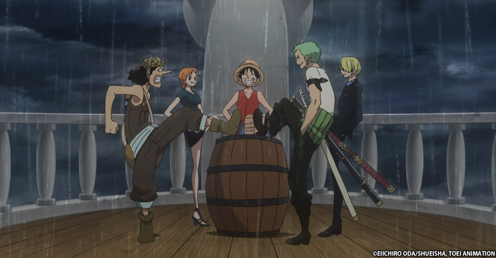
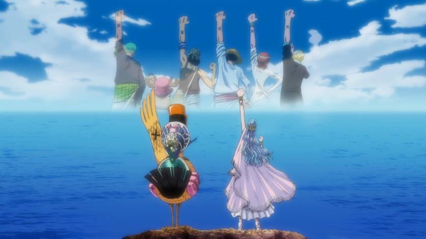
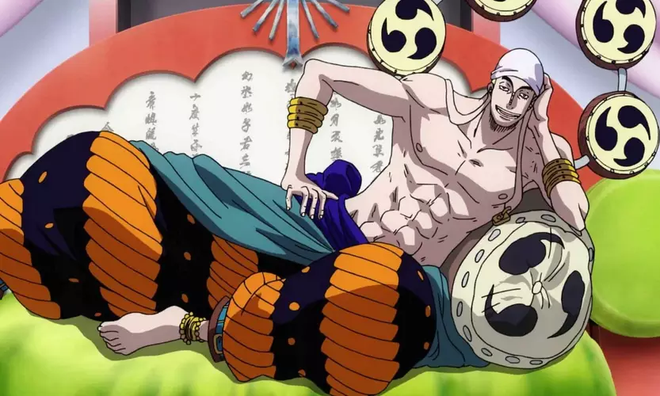
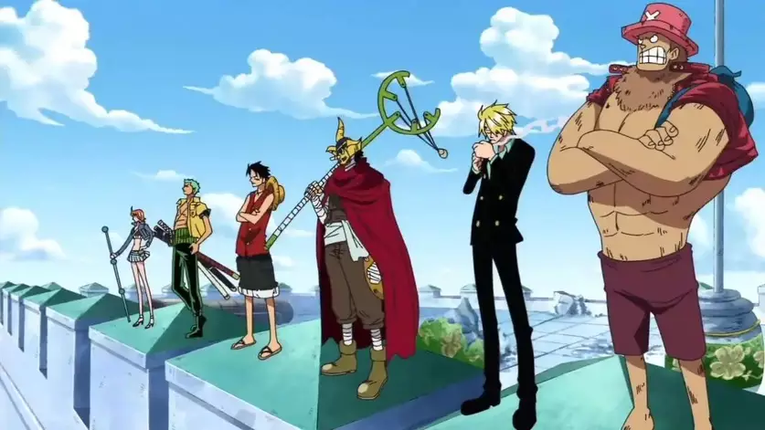
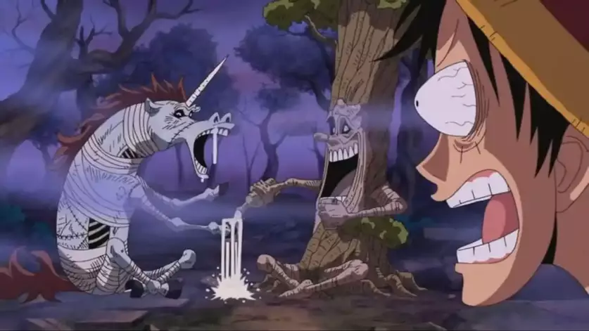
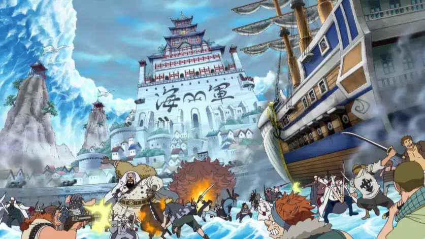
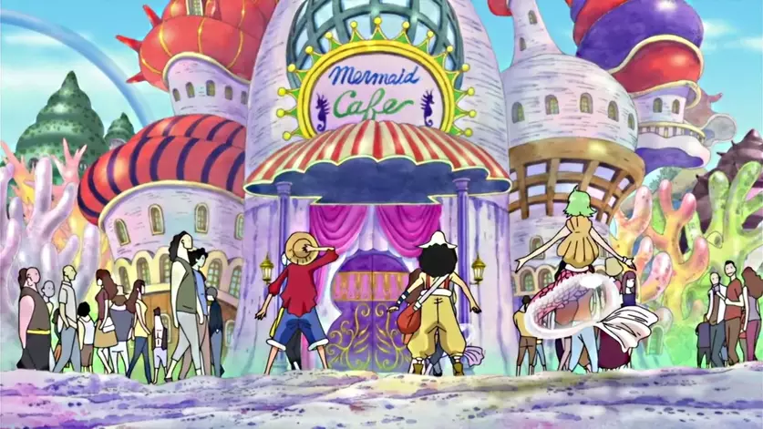
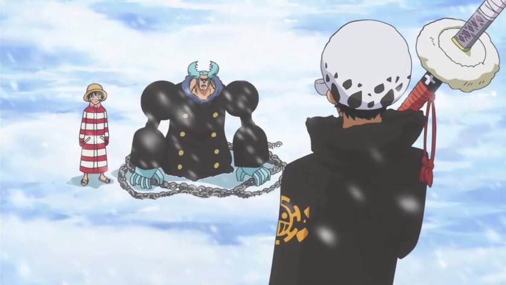
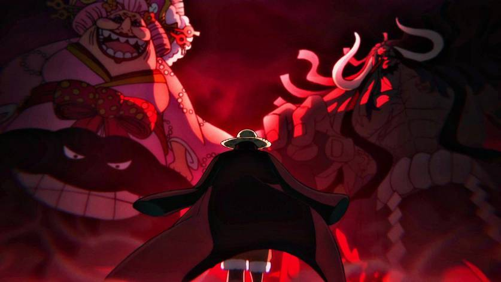
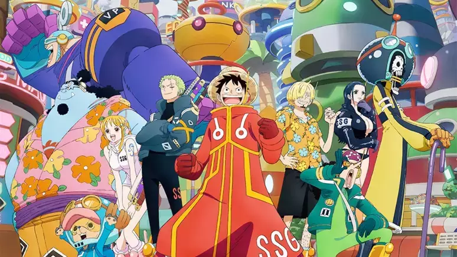

Lista de Sagas de One Piece
-  East Blue: A primeira saga de One Piece introduz os primeiros nomes da tripulação dos chapéus de palha. A saga começa no capítulo um, lançado em 1997, e vai até o capítulo de número 100. No arco Romance Dawn, Luffy conhece Coby e recruta Roronoa Zoro como primeiro integrante da tripulação. Em seguida, Usopp e Sanji entram para o bando, seguidos de Nami, que apesar de ter aparecido nos primeiros episódios, demora para ser recrutada oficialmente.
-  Alabasta: A saga de Alabasta representa a entrada da tripulação na Grand Line, a corrente oceânica que corta o mundo de One Piece. Iniciada em 1999, no mangá, a saga introduz a Baroque Works, uma organização criminosa comandada pelo grande Corsário Crocodile, que quer dominar o reino de Alabasta. É nessa saga que o fofo Chopper e a bela Nico Robin entram para o bando do Chapéu de Palha e que também conhecemos Ace, irmão do Luffy que está em busca do Barba Negra.
-  Sky Island: Após a épica jornada em Alabasta, os Chapéus de Palha se deparam com algo inacreditável: um oceano nos céus. Lá, eles decidem interferir em um conflito entre Povo do Céu e os habitantes nativos do Jardim de Cima, ilha que está em posse de Enel, um usuário da Akuma no Mi do trovão, e seus sacerdotes.
-  Saga de Water 7/Enies Lobby: Após o confronto entre o deus do trovão e o homem-borracha, a tripulação retorna ao Mar Azul e encontra o Almirante Aokiji pela primeira vez. Em seguida, os Chapéus de Palha chegam na próspera metrópole de Water 7 e são acusados pela tentativa de assassinato do prefeito. Eles são pegos pela CP9, o grupo de assassinos do Governo, e Nico Robin é capturada. Nessa saga, Franky se junta ao bando.
-  Saga do Thriller Bark: Os Chapéus de Palha navegam para a ilha assombrada de Thriller Bark, onde vão encontrar fantasmas, zumbis e Gecko Moria, um dos Shichibukai, grupo de poderosos piratas aliados do Governo Mundial. Brook se junta ao bando nesse arco.
-  Saga da Guerra de Marineford: Da Red Line, a equipe tenta seguir para a Ilha dos Homens-Peixe, mas são derrotados no Arquipélago de Sabaody e enviados para ilhas diferentes. Luffy cai em uma ilha só de mulheres, comandada pela Shichibukai Boa Hancock e descobre que Ace está preso e será executado. De lá, o capitão dos Chapéus de Palha segue para Impem Down, na esperança de salvar Ace da morte. Ele enfrenta Magellan, o vice-diretor da prisão, e escapa ao lado de alguns fugitivos — mas sem Ace. Luffy então segue para Marineford, o quartel-general da marinha e se envolve na conhecida Guerra dos Maiorais.
-  Saga da Ilha dos Homens-Peixe:Nessa saga iniciada em 2010, os Chapéus de Palha se reúnem novamente em Sabaody, dois anos após os eventos de Marineford, e dessa vez conseguem ir para a Ilha dos Homens-Peixe. Chegando lá, uma famosa cartomante prevê que Luffy destruirá a Ilha e a tripulação é novamente acusada injustamente. Enquanto isso, o homem-peixe Hody Jones tenta dar um golpe de estado para tomar o Reino Ryugu.
-  Saga da Aliança Pirata: Em 2012, Oda mostrou a chegada da tripulação ao Novo Mundo. Lá, os Piratas do Chapéu de Palha recebem um chamado de socorro de uma ilha chamada Punk Hazard, onde encontram o recém-iniciado Shichibukai, Trafalgar Law. Em seguida, o bando descobre a conspiração para criar Akuma no Mi artificiais. Depois dessa aventura, Luffy é atraído para o torneio de gladiadores em Dressrosa, onde reencontra Sabo, outro irmão de criação. Após isso, o vilão Doflamingo prende todos em uma jaula gigante, e Luffy o enfrenta em uma das melhores batalhas do anime.
-  Saga dos Yonkou:Em 2015, foi iniciada a saga mais recente do anime One Piece. O grupo chega a Zou, um elefante vivo de 1000 anos com uma ilha nas costas. Lá eles conhecem a Tribo Mink, que está se recuperando de um ataque de Jack, um dos homens de confiança de Kaido. Parte do bando parte para resgatar Sanji de um casamento e formam uma aliança para derrubar a vilã Big Mom. A perversa Imperatriz se alia a Kaido. A Aliança Ninja-Pirata-Mink-Samurai se reúne no País de Wano para enfrentar os vilões. Luffy enfrenta Kaidou e vence após um grande segredo sobre sua Gomu Gomu no Mi ser revelada. Ao final da batalha, Luffy se torna um dos Imperadores.
-  Saga Final:Após derrubarem dois Yonkou e salvarem o país de Wano, os Chapéus de Palha seguem em sua jornada em busca do One Piece. A próxima parada é na Ilha de Egghead, reduto e laboratório do mundialmente famoso cientista Vegapunk, que era o novo alvo da CP-0 e dos Cinco Ancioões. Enquanto isso, Trafalgar Law enfrenta o Yonkou Marshall D. Teach, o Barba Negra, e Eustass "Capitain" Kid chega a Elbaf, a Ilha dos Gigantes, para desafiar Shanks, o Ruivo.